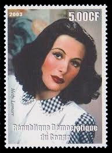
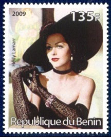
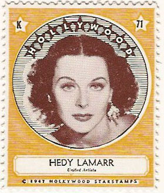
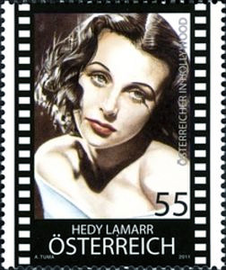
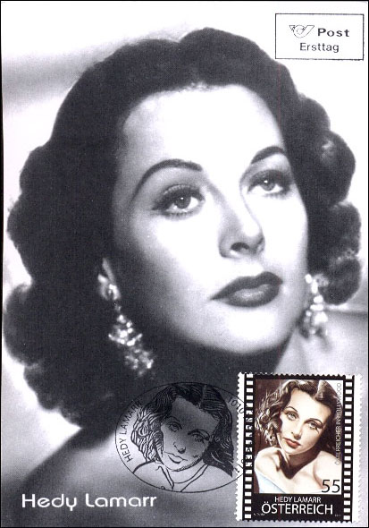
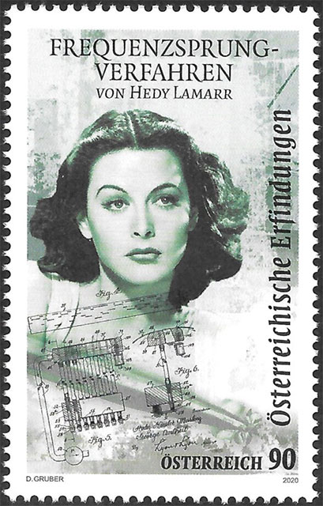
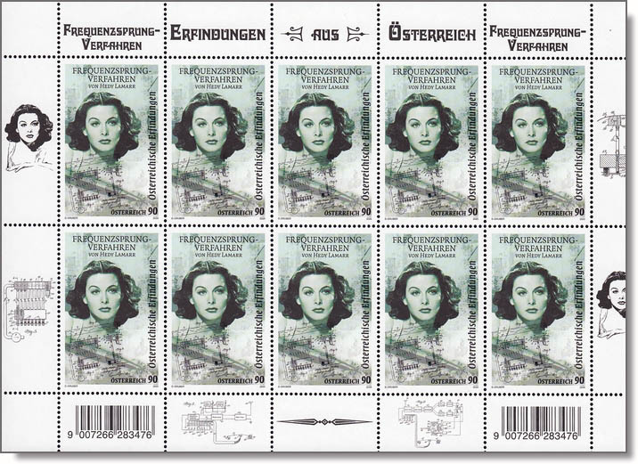
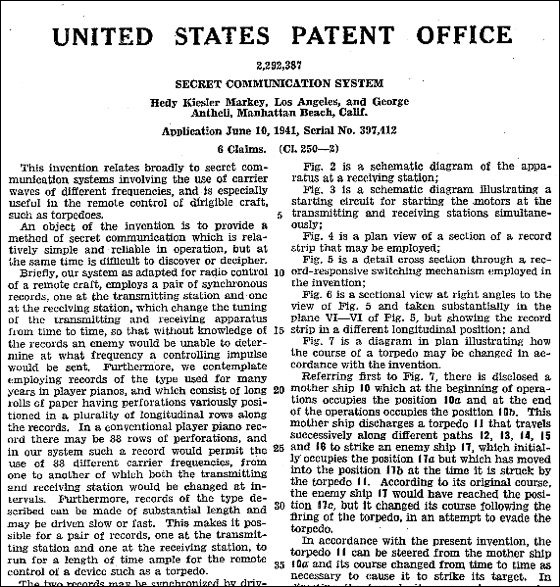
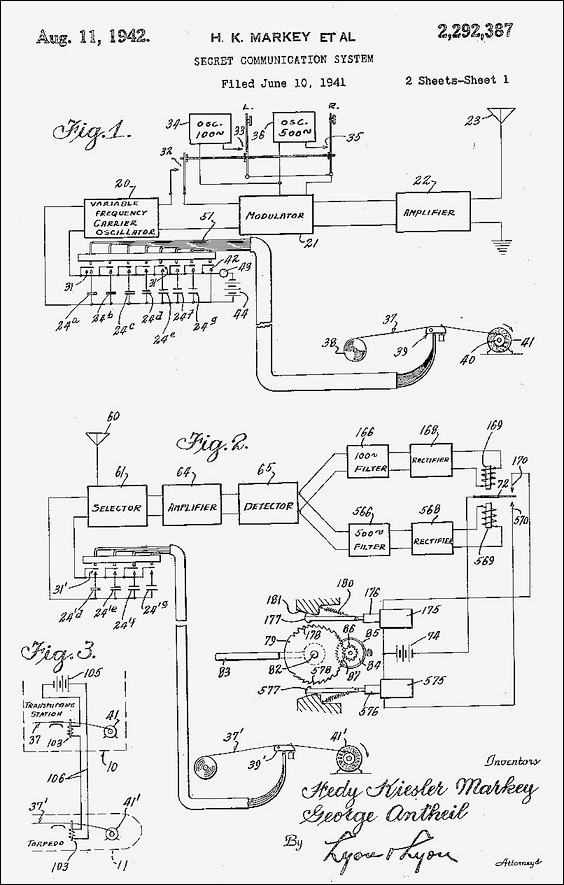
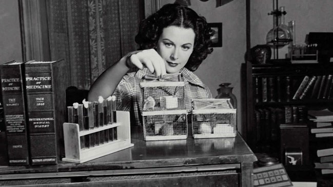

HEDY LAMARR - A BEAUTIFUL ACTRESS, A BEAUTIFUL MIND
Hedy Lamarr was born Hedwig Eva Maria Kiesler (9 November 1914 - 19 January 2000) in Vienna, Austria-Hungary. She was the only child of Jewish parents, Gertrud (née Lichtwitz), a pianist and Budapest native who came from the "Jewish haute bourgeoisie", and Lemberg-born Emil Kiesler, a successful bank director. Her father died in Vienna before the Holocaust, and Lamarr rescued her mother.
She studied ballet and piano at age 10. When she worked with Max Reinhardt in Berlin, he called her the "most beautiful woman in Europe". Soon the teenage girl played major roles in German movies, alongside stars like Heinz Rühmann and Hans Moser.


In early 1933 she starred in Gustav Machatý's notorious film Ecstasy, a Czechoslovak film made in Prague, in which she played the love-hungry young wife of an indifferent older husband. Closeups of her face during orgasm in one scene, and full frontal shots of her in another scene, swimming and running nude through the woods, gave the film great notoriety.


Aged 19, she married Friedrich Mandl, a Vienna-based arms manufacturer 13 years her senior. Mandl prevented her from pursuing her acting career, and instead took her to meetings with technicians and business partners. In these meetings, the mathematically talented Lamarr learned about military technology.


She separated from Mandl and first she went to Paris, then to USA. At Hollywood she was usually cast as glamorous and seductive. She starred with famous actors such as Chares Boyer, Spencer Tracy, Clark Gable and James Steward. Lamarr made 18 films from 1940 to 1949 even though she had two children during that time (in 1945 and 1947). After leaving MGM in 1945, she enjoyed her biggest success as Delilah in Cecil B. DeMille's Samson and Delilah, the highest-grossing film of 1949.

Lamarr became a naturalized citizen of the United States on April 10, 1953. She died in Casselberry, Florida on January 19, 2000, aged 86, from natural causes. Her son Anthony Loder took her ashes to Austria and spread them in the Vienna Woods, in accordance with her last wishes.
Frequency-hopping (spread-spectrum) invention
Avant-garde composer George Antheil, a son of German immigrants and neighbor of Lamarr, had experimented with automated control of musical instruments, including his music for Ballet Mécanique, originally written for Fernand Léger's 1924 abstract film. This score involved multiple player pianos playing simultaneously.
Lamarr took her idea to Antheil and together, Antheil and Lamarr submitted the idea of a secret communication system in June 1941. On August 11, 1942, US Patent 2,292,387 was granted to Antheil and "Hedy Kiesler Markey", Lamarr's married name at the time. This early version of frequency hopping used a piano roll to change between 88 frequencies and was intended to make radio-guided torpedoes harder for enemies to detect or jam. Although a presentation of the technique was soon made to the U.S. Navy, it met with opposition and was not adopted.

Hedy Lamarr and George Antheil, shunned by the Navy, no longer pursued their invention. But in 1957, the concept was taken up by engineers at the Sylvania Electronic Systems Division, in Buffalo, New York. Their arrangement, using, of course, electronics rather than piano rolls, ultimately became a basic tool for secure military communications. It was installed on ships sent to blockade Cuba in 1962, about three years after the Lamarr-Antheil patent had expired.

Subsequent patents in frequency changing, which are generally unrelated to torpedo control, have referred to the Lamarr-Antheil patent as the basis of the field, and the concept lies behind the principal anti-jamming device used today, for example, in the U.S. government's Milstar defense communication satellite system. The design is one of the important elements behind today's spread-spectrum communication technology, such as modern CDMA, Wi-Fi networks, and Bluetooth technology.

Perhaps owing to a lag in development, the patent was little-known until 1997, when the Electronic Frontier Foundation gave Lamarr an award for this contribution. In 2005, the first Inventor's Day in German-speaking countries was held in her honor on November 9, on what would have been her 92nd birthday.
The Austrian Post issued on the 4th of February 2011, under the title "Austrians in Hollywood - Hedy Lamarr", a postal stamp and a Maxicard to honor the actor and the inventor (Sc. 2296 / Mi. 2911). Other Lamarr stamps displayed on this page were issued by Congo (2003) and Benin (2009). The so-called Starstamp of 1947 was not valid for postal use and is presented here as a curiosity.
Main source: Wikipedia
Link: Austrian Women on Stamps